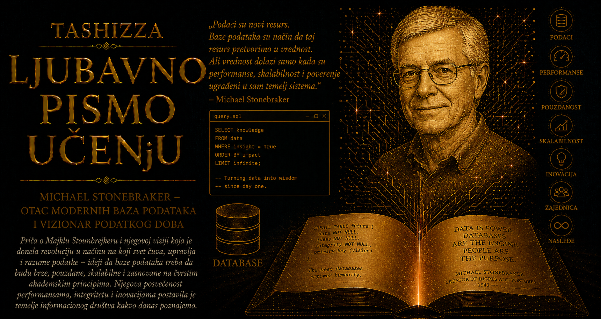

Ljubavno pismo učenju

Savremeni digitalni svet počiva na podacima koji gotovo nikada nisu vidljivi kao celina. Iza poruke koju šaljemo, računa koji plaćamo, avionske karte koju rezervišemo, medicinskog nalaza koji lekar otvara i mape koja nas vodi kroz nepoznat grad nalaze se sistemi čiji je zadatak da sačuvaju činjenice, povežu ih, pronađu u pravom trenutku i zaštite od gubitka ili protivrečnosti. Njihov rad primećujemo tek kada zakažu, jer se pouzdanost infrastrukture obično pokazuje tišinom: zapis ostaje tačan, upit dobija smislen odgovor, istovremeni korisnici ne kvare jedni drugima podatke, a sistem se posle greške vraća u dosledno stanje. Među ljudima koji su toj nevidljivoj infrastrukturi dali savremeni oblik posebno mesto pripada Michaelu Stonebrakeru, istraživaču čije su zamisli povezale teoriju relacionih baza, izgradnju stvarnih sistema, akademsku otvorenost i sposobnost softvera da se menja zajedno sa potrebama svojih korisnika.
Relacioni model je tokom sedamdesetih godina doneo duboku promenu u načinu organizovanja podataka. Umesto krutih hijerarhija i programa tesno vezanih za fizički raspored zapisa, ponudio je tabele, redove, kolone i veze koje izražavaju značenje podataka. Korisnik je mogao da opiše šta želi da pronađe, dok je sistem preuzimao odgovornost za izbor odgovarajućeg puta do rezultata. Stonebraker je sa Eugeneom Wongom i berklijskim timom tu teorijsku snagu pretvorio u INGRES, jedan od najuticajnijih ranih relacionih sistema. Rad na njemu pokazao je koliko su relacione ideje plodne, ali je istovremeno otkrio granice prve generacije baza, oblikovane prvenstveno za poslovne evidencije, brojeve, tekst, datume, šifre, zalihe i druge podatke koji se lako uklapaju u unapred poznate tipove.
Širenjem računara na geografiju, projektovanje, medicinu, naučna istraživanja i multimediju pojavili su se podaci čija se unutrašnja priroda teško mogla izraziti pomoću nekoliko osnovnih tipova. Prostorne koordinate, geometrijski oblici, slike, dokumenti, vremenske serije, hemijske strukture i složeni inženjerski modeli morali su da se rastavljaju na neprirodne delove ili smeštaju u neprozirna binarna polja. Baza ih je tada mogla sačuvati, ali nije razumela kako da ih poredi, pretražuje, indeksira ili proverava. Stonebraker je u tom ograničenju prepoznao pitanje važnije od dodavanja još jednog tipa podataka: kako izgraditi sistem sposoban da prima nova znanja koja njegovi prvobitni tvorci nisu mogli da predvide?
Odgovor je dobio ime POSTGRES, izvedeno iz izraza „posle INGRES-a”. Implementacija je započela 1986. godine na Univerzitetu Kalifornije u Berkliju, uz podršku američkih istraživačkih institucija i rad velike grupe studenata, profesora i saradnika. Stonebraker je određivao arhitektonski pravac, dok su Lawrence Rowe i članovi berklijskog tima razvijali pojedine delove sistema. POSTGRES je zamišljen kao istraživačka laboratorija u obliku funkcionalne baze podataka, dovoljno smela da ispituje nove ideje i dovoljno stvarna da te ideje mora proveriti u susretu sa memorijom, diskom, istovremenim korisnicima, kvarovima i programima koji očekuju predvidljivo ponašanje.
Njegova najdalekosežnija osobina bila je proširivost ugrađena u samu unutrašnju organizaciju sistema. Klasična baza dobijala je tipove, operatore i načine indeksiranja koje je proizvođač unapred odredio. POSTGRES je omogućavao korisnicima i programerima da uvedu sopstvene tipove podataka, funkcije, operatore i metode pristupa. Novi podatak tako nije morao da ostane zatvoren u polju čije značenje poznaje samo aplikacija. Mogao je da postane ravnopravan deo jezika baze, sa pravilima poređenja, odgovarajućim operacijama i načinom indeksiranja prilagođenim svojoj prirodi.
Takva prilagodljivost oslanjala se na bogate sistemske kataloge, tabele u kojima baza čuva znanje o sopstvenoj strukturi. U njima se opisuju postojeće tabele, kolone, tipovi, funkcije, operatori i metode pristupa, pa sistem prilikom obrade upita može da pročita sopstvene metapodatke i razume novu sposobnost. Arhitektura je time dobila osobinu nalik učenju: ono što nije bilo ugrađeno prilikom nastanka moglo je kasnije biti precizno opisano i uključeno u zajedničke mehanizme obrade. Baza je istovremeno postala gotov sistem i platforma na kojoj se mogu graditi nove vrste sistema.
POSTGRES je istraživao i mogućnost da baza aktivno reaguje na događaje. Njegov sistem pravila omogućavao je da se određeni postupci pokreću kada se podaci promene ili kada upit ispuni zadate uslove. Iz tih istraživanja proistekli su važni doprinosi razvoju pravila za prepisivanje upita, okidača i aktivnih baza podataka. Poslovna logika koja mora važiti za svaku aplikaciju mogla je da bude postavljena uz same podatke, gde se dosledno primenjuje bez obzira na program kojim im korisnik pristupa. Time je baza postajala čuvar odnosa i pravila, a ne samo prostor u kome se zapisi pasivno gomilaju.
Posebno ambiciozna bila je zamisao o čuvanju prethodnih verzija podataka i postavljanju upita nad njihovim ranijim stanjem. Rani POSTGRES istraživao je vremenske podatke i organizaciju skladišta u kojoj se stare verzije zapisa ne prepisuju odmah. Pojedini eksperimentalni mehanizmi kasnije su zamenjeni praktičnijim rešenjima, ali je razmišljanje u verzijama ostalo duboko utkano u potomka tog sistema. Savremeni PostgreSQL koristi viševerzijsku kontrolu konkurentnosti, poznatu kao MVCC, zahvaljujući kojoj upit može da vidi dosledan snimak podataka dok druge transakcije istovremeno menjaju iste tabele. Čitaoci i pisci tako dobijaju znatno veću slobodu rada, dok sistem pažljivo upravlja vidljivošću svake verzije zapisa.
Eksperimentalni karakter projekta značio je da su njegove ideje morale da podnesu i neuspeh. POSTGRES je koristio jezik POSTQUEL, naslednika jezika QUEL iz INGRES-a, u vreme kada je industrija sve snažnije prihvatala SQL. Neki mehanizmi pravila, skladištenja i oporavka pokazali su se složenim ili skupim, pa su tokom razvoja menjani, pojednostavljivani ili napuštani. Upravo je ta spremnost na ispravku učinila projekat naučno plodnim. Prototip nije služio ukrašavanju unapred donetog zaključka; bio je instrument saznanja koji je pokazivao gde dobra zamisao opstaje, gde zahteva dublju obradu, a gde stvarnost otkriva njene granice.
Berklijski projekat zvanično je okončan početkom devedesetih, a poslednja univerzitetska verzija, Postgres 4.2, objavljena je 1994. godine. Izvorni kod je, međutim, bio dostupan ljudima izvan prvobitnog tima, pa je sistem mogao da promeni nosioce razvoja. Andrew Yu i Jolly Chen zamenili su POSTQUEL tumačem za SQL, očistili i prilagodili kod i 1995. godine objavili Postgres95. Ubrzo su se preko interneta okupili novi programeri, među kojima su važnu ulogu imali Marc Fournier, Bruce Momjian, Thomas Lockhart, Vadim Mikheev i drugi rani članovi zajednice. Projekat je 1996. poneo ime PostgreSQL, spajajući istorijsko poreklo POSTGRES-a sa jezikom SQL koji je prihvatio.
U toj smeni generacija nalazi se važna granica autorstva. Stonebraker je predvodio stvaranje POSTGRES-a i njegovih temeljnih zamisli o proširivoj objektno-relacionoj bazi. PostgreSQL kao dugovečan, pouzdan i široko primenjivan slobodni sistem oblikovala je međunarodna zajednica koja je menjala pojedine mehanizme, unapređivala transakcije, optimizaciju, bezbednost, oporavak, replikaciju i usklađenost sa standardima. Njihova dela povezana su kodom, imenom i arhitektonskim nasleđem, ali veličina PostgreSQL-a pripada mnogim generacijama stvaralaca. Stonebrakerova vizija pokazala je svoju punu snagu upravo time što je mogla da nastavi život bez njegove lične kontrole.
Veoma slobodni uslovi korišćenja dodatno su otvorili put takvom razvoju. PostgreSQL licenca dopušta upotrebu, proučavanje, izmenu i distribuciju koda u otvorenim i vlasničkim proizvodima. Univerziteti ga mogu koristiti u nastavi i istraživanju, kompanije na njemu mogu graditi usluge, javne ustanove mogu ga prilagođavati sopstvenoj infrastrukturi, a pojedinac može proučavati isti sistem koji pokreće zahtevne produkcione aplikacije. Otvorenost koda uklonila je pravnu prepreku između akademskog nasleđa i praktične primene, dok je zajednica tu slobodu pretvorila u disciplinu javnih rasprava, stručnih pregleda, dugotrajnog testiranja i odgovornog objavljivanja novih verzija.
Projekat danas razvija PostgreSQL Global Development Group, međunarodna zajednica pojedinaca i stručnjaka koje podržavaju različite kompanije i organizacije. Nijedna firma ne poseduje čitav PostgreSQL niti može samostalno zatvoriti njegov zajednički kod. Takva raspodela moći zahteva strpljenje, argumentovano usaglašavanje i poverenje koje se stiče doprinosima. Odluke ponekad sazrevaju sporije nego u proizvodu kojim upravlja jedan vlasnik, ali moraju da podnesu javno tehničko obrazloženje i dugoročnu odgovornost prema korisnicima. Autoritet u toj zajednici proizlazi iz znanja, rada i spremnosti da se izmena izloži proveri drugih.
Stonebrakerova zamisao o proširivosti naročito je vidljiva u ekosistemu dodataka. PostgreSQL može dobiti nove funkcije, tipove, operatore, agregate, proceduralne jezike i načine indeksiranja bez stvaranja zasebne baze od početka. PostGIS je jedno od najupečatljivijih ostvarenja tog principa: proširenje koje sistemu daje sposobnost da čuva, indeksira i analizira geografske podatke, od tačaka i linija do poligona, rastojanja i prostornih odnosa. Njegovi tvorci pripadaju kasnijoj zajednici, ali je mogućnost njihovog rada neposredno povezana sa arhitektonskom odlukom da baza ostane otvorena za vrste podataka koje berklijski tim nije mogao unapred nabrojati.
Isti princip danas obuhvata tekst, dokumente, mrežne adrese, raspone, vremenske serije, hijerarhijske oznake, naučne strukture i vektorske reprezentacije koje se koriste u savremenim sistemima veštačke inteligencije. Podrška za JSON i indeksirani JSONB omogućava povezivanje strogo strukturisanih poslovnih podataka sa promenljivijim dokumentima, uz očuvanje transakcija, ograničenja, veza i moćnih upita. Opšti okviri za indekse, među kojima su GiST i GIN, dozvoljavaju da različite vrste podataka dobiju način pretraživanja prilagođen sopstvenoj semantici. Jezgro baze preuzima složene odgovornosti povezane sa konkurentnošću, oporavkom i upravljanjem strukturom, dok autor proširenja opisuje prirodu novog podatka.
Takva arhitektura promenila je i ekonomiju izgradnje softvera. Razvojni tim može u jednom pouzdanom sistemu objediniti više vrsta podataka i koristiti zajedničke procedure za rezervne kopije, oporavak, kontrolu pristupa, nadzor i administraciju. Smanjuje se potreba za nizom odvojenih servisa, od kojih svaki zahteva sopstveno održavanje i posebnu stručnost. Ova pogodnost podrazumeva promišljen izbor: loše napisano proširenje, nepažljivo dodeljena ovlašćenja ili preterana zavisnost od posebnosti jednog sistema mogu postati izvor novih rizika. Proširivost uvećava sposobnost baze, ali istovremeno uvećava odgovornost ljudi koji njome upravljaju.
Pouzdanost savremenog PostgreSQL-a nastajala je decenijama nakon prvobitnog prototipa. Zapisivanje unapred, poznato kao WAL, omogućava da se izmene najpre bezbedno zabeleže, a zatim primene na glavne datoteke podataka, čime se stvaraju uslovi za oporavak posle pada sistema, rezervne kopije u određenoj tački vremena i replikaciju. Fizička i logička replikacija pružaju različite načine prenosa podataka između servera, dok napredni mehanizmi zaključavanja, provere integriteta i upravljanja transakcijama štite doslednost sistema. Ta svojstva pripadaju zajedničkom radu brojnih generacija programera i pokazuju kako otvoreni projekat može povezati stvaralačku slobodu sa inženjerskom strogošću.
PostgreSQL je izrastao u infrastrukturu za poslovne aplikacije, javne registre, naučne platforme, finansijske sisteme, upravljanje sadržajem i velike internet servise. Može se pokrenuti na ličnom računaru, u sopstvenom centru podataka ili kao upravljana usluga u oblaku. Širenje kroz oblak ujedno zahteva razlikovanje zajedničkog projekta od komercijalnih proizvoda i izvedenih sistema koji koriste njegovo ime, protokol ili delove koda. Pružalac usluge može dodati mogućnosti koje olakšavaju rad, ali i vezati korisnika za sopstvene administrativne alate, dodatke ili ponašanje koje nije deo izvornog PostgreSQL-a.
Otvorenost donosi i trajnu bezbednosnu obavezu. Kod dostupan stručnom pregledu pruža mogućnost da se slabosti pronađu, prouče i isprave, dok stvarna zaštita zavisi od redovnog ažuriranja, pažljivog upravljanja privilegijama, proveravanja porekla proširenja, sigurnog mrežnog pristupa i odgovornog rada administratora. Sloboda pristupa kodu predstavlja početak zajedničke brige, a bezbednost nastaje tek kada se znanje pretvori u proverene ispravke i kada ih korisnici blagovremeno primene.
Stonebraker je u kasnijem radu snažno zagovarao specijalizovane baze i upozoravao da jedna arhitektura teško može biti najbolja za svako opterećenje. Sistemi namenjeni ogromnim analitičkim kolonama, neprekidnim tokovima, naučnim nizovima ili transakcijama u memoriji mogu steći veliku prednost prilagođavanjem jednom problemu. Nasleđe POSTGRES-a stoga ne poziva na stvaranje baze koja će progutati sve druge sisteme. Ono pokazuje koliko dugo može trajati opšta osnova koja razume svoje granice, prihvata proširenja i dozvoljava korisnicima da joj dodaju znanje koje ranije nije posedovala.
U julu 2026. godine PostgreSQL 18 predstavlja aktuelnu stabilnu glavnu verziju, dok zajednica javno ispituje PostgreSQL 19 pred planirano konačno izdanje. Današnji sistem sadrži asinhroni ulaz i izlaz, naprednu replikaciju, paralelno izvršavanje, particionisanje, rad sa dokumentima, tekstualno pretraživanje, sofisticirane indekse, bezbednosne politike i veliki svet proširenja. Berklijski tim nije mogao da predvidi svaku od tih mogućnosti, ali je predvideo potrebu da budućnost uvek donosi podatke i zahteve koje sadašnjost još ne poznaje.
Stonebrakerov najtrajniji doprinos PostgreSQL-u zato se ne meri jednom naredbom, algoritmom ili strukturom datoteke koja je ostala nepromenjena. Njegova vizija ugradila je evoluciju u samu arhitekturu baze. Podaci su mogli da dobiju nove tipove, upiti nove operatore, indeksi nove načine pretrage, a otvorena zajednica mogućnost da preuzme odgovornost posle završetka univerzitetskog projekta. Sistem je dobio sposobnost da menja svoje izražajne granice bez odricanja od pouzdanosti koja ga čini vrednim.
PostgreSQL je tako postao mnogo više od uspešnog potomka jednog istraživačkog poduhvata. On je dokaz da otvorenost može da traje kada je praćena znanjem, proverom i odgovornošću, da akademska ideja može postati zajedničko dobro i da sistem nadživljava svoje tvorce kada mu oni ostave dovoljno čvrste temelje i dovoljno prostora za promenu. Stonebraker je pomogao da baza podataka nauči kako da prima nove vrste znanja; generacije koje su došle posle njega pokazale su koliko daleko takva sposobnost može odvesti čitavu digitalnu civilizaciju.